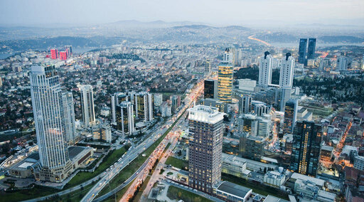
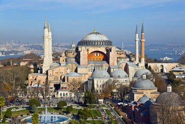
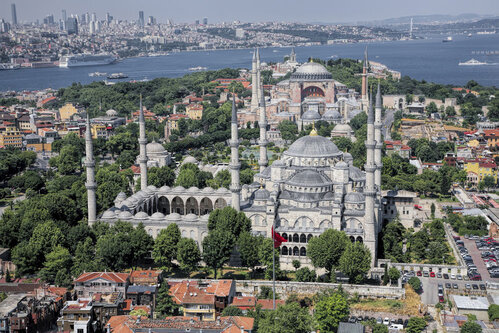
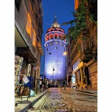

Loddy Mkhari
The founder and CEO of The Pizzarr pizza.
I am The Owner of The Best Cup cake.
Engineer, cloud enginer and data scientist who love coffee
|
istanbul

istanbuɫ (listen)), formerly known as Constantinople, is the largest city in Turkey, serving as the country's economic, cultural and historic hub. The city straddles the Bosporus strait, lying in both Europe and Asia, and has a population of over 15 million
residents, comprising 19% of the population of Turkey.[4] Istanbul is the most populous European city,[b] and the world's 15th-largest city. The city was founded as Byzantium (Byzantion)
aya-sophia
The Hagia Sophia is an enormous architectural marvel in Istanbu, Turkey, that was originTower in Paris or the Parthenon in Athens, history of Istanbul

Blue-Mosque
The Blue Mosque was built between 1609 and 1616, by the architect Mehmet Ağa,It was designed as to complement the imposing Hagia Sophia Mosque, which faces it across Sultanahmet Square.

galata tower
The Galata Tower, or with the current official name Galata Kulesi Museum, is a tower in the Beyoğlu district of Istanbul, Turkey. It is named after the quarter in which it's located, Galata.
